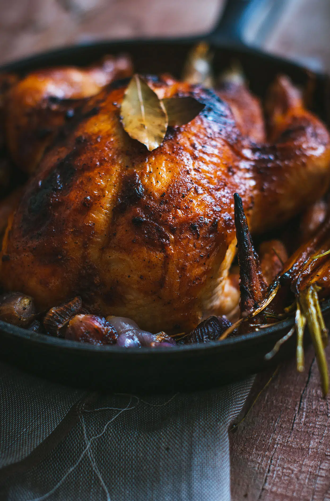

Chicken Au Four
Home

Description
This recipe is for creating Chicken Au Four. Easy to make and delicious.
Ingredients
- Yellow Potato
- White Onion
- Skin-on Bone-in Chicken thighs
- Cloves of Garlic
- Paprika
- Salt
- Pepper
- Olive Oil
Directions
Prep
- Cut potato into 1/4" pieces.
- Halve the onion and cut into 1/4" slices.
- Cut the chicken parallel to the bone on both sides of the bone.
- Preheat oven to 425F.
Cooking
- In a small, cold, oven safe skillet, coat the bottom with oil.
- Place the potatoes in the bottom og the skillet.
- Cover potatoes with onions and season with salt and pepper.
- Turn stove on to medium until oil starts to bubble for a couple minutes.
- While pan is heating up, cover chicken in salt and paprika on both sides.
- Flip the potatoes and toss in the garlic.
- Lay the chicken skin side up on top of the potato and onion slices.
- Place skillet in oven for 25-30 minutes.
- Let cool and serve.